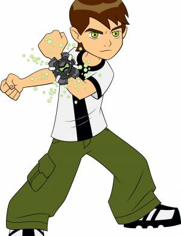

Sinopse:
Um garoto de 10 anos de idade descobre um dispositivo
que pode transformá-lo em 10 heróis alienígenas diferentes, cada um com
habilidades únicas. Com este novo poder, o menino ajuda as pessoas e
combate malfeitores.
Autor: Man of Action
Primeiro episódio: 27 de dezembro de 2005
Adaptações: Ben 10: Secret of the Omnitrix (2007), Ben 10: Invasão Alienígena (2009)
Gêneros: Ação e Aventura
| Temporada | Episódios |
| Ben 10: Classico | |
| Ben 10: Força Alienígena | |
| Ben 10: Supremacia Alienígena | |
| Ben 10: Omniverse | |
| Ben 10: Reboot |
